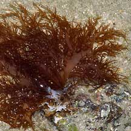

|
|
|
red seaweeds text index | photo
index
|
| seaweeds in general |
| Red
seaweed Division Rhodophyta updated Dec 11
Where seen? Red seaweeds are found on all our shores. Some are huge red sheets often mistaken for plastic bags, others are fine feathery pink tufts. Yet others are bunches of long skinny filaments or juicy fat stems; or crunchy pink branches that form balls. Unlike brown and green seaweeds, red seaweeds are rarely found in such seasonally large numbers as to form carpets on the shores. Red seaweeds are most diverse in the seas of the tropics. A few species are also found in freshwater. Features: Red seaweeds have chlorophyll but this is masked by phycocyanin and phycoerythrin, additional pigments which gives them their distinctive reddish colour. These two pigments also allow them to photosynthesise in lower light levels and thus grow in deeper waters where green seaweeds may not survive. Red seaweeds may not always be red. If the pigment phycoerythrin is destroyed, they may appear purple, brown, green, or yellow. But when held up against the light, tints of red or pink can be seen. Rhodon means 'rose' or 'red' in Greek. Human uses: Red seaweed are among our favourite seafood. The familiar dried seaweed used in Japanese sushi is a red seaweed Porphyra sp. which has been cultivated in Japan for more than 300 years. It is also eaten fresh. Other red seaweeds are also eaten. In the Philippines, some species of red seaweeds are eaten as salads. These include Gracilaria, Hypnea, Acanthophora and Halymenia. Agar is an important extract of red seaweed, mainly from Gelidium, Gracilaria and Pterocladia. It is used in laboratories and pharmaceutical industries to study bacteria and to separate and purify various products. Carrageenans are also extract from red seaweeds, especially Eucheuma which is cultivated in the Philippines and tropical Pacific areas. The Philippines is the leading producer of carrageenans which are used throughout the world as an emulsifier and stabiliser in food and pharmaceutical products. Agar, on the other hand is used as a solidifying agent. |
 Kusu Island, Feb 05
|


| Division Rhodophyta on Singapore shores text index and photo index of red seaweeds on this site |
Links
|
|
|